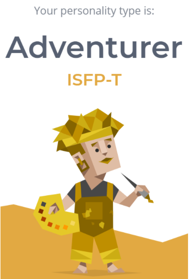

My name is Sweta Prashad and my student number is s3661979. I was born in Melbourne on March 16th 1999, and my background is Indian and Nepalese. My first language is English; however, I can speak fluent Hindi, moderate Nepalese and basic Italian. I learnt Hindi and Nepalese from home through my parents and Italian from primary school all the way till Year 12. My favourite hobby is learning languages as I am currently studying Spanish 1 this semester too as an elective! My interest in IT began from a young age when I always used to play on my dad’s computer. I was always intrigued by what seemed like this massive screen, it was like magic! After that I continued my passion for learning new things on the computer and eventually my dad bought me my own laptop. I learnt everything on my own from there just by using it every day and trying new things. I don’t have great IT experience however I can use Microsoft Office proficiently, Illustrator and software like Salesforce and Tableau.
I'm Taneshwar, my student number is S3865485 and I am part of the Tech Connect group. I love playing sports (favourites are Badminton and Cricket) and have been playing badminton for almost 7 years now. I enjoy traveling and listening to music as well as meeting new people. I mainly speak Punjabi at home with my family but I can also understand and speak Hindi pretty well (I lived in India for 9 years), I know a bit of Indonesian which I learnt in high school. In my spare time I mainly watch movies or play games. My interests in IT are varied, mostly I enjoy solving problems and helping others out but I also like finding out how things work and ways to improve them. When I was younger I used to open things we had at home like an old CPU to see if I could figure out how it worked. I’ve been interested in IT since I was in primary school where we had a ICT class which sparked my interest in IT as well as my dad who used to teach IT when he was younger. I’ve had some programming experience in high school where I did python, java, html, css and php. I also learnt about databases and game design and created my own 2D platformer in year 10 using game maker.
My name is Kimberley. I was born in New Zealand and moved to Australia when I was 7 however both my parents are Filipino. I can only speak English but can understand a bit when my parents talk. I enjoy playing games, listening to music, eating, sleeping and watching the sunset. I really like cute things, especially small animals such as rabbits, cats and dogs. I also try to bake occasionally to satisfy my sweet tooth. Throughout highschool, I have chosen to do IT subjects and have now chosen to study a bachelor of IT as technology is something that is used in everyday life, it involves different aspects and is an ever growing industry. I’ve always found technology interesting as it allows me to play games, be creative and communicate with others. At the moment, I have very basic knowledge in Java and have worked with HTML, CSS, PHP and JavaScript in the past however I would like to learn more and refine my coding skills.
My name is Sing Ho, but most of my friends just call me Sing or Santa. My student number is s3830920. I was born in Malaysia and went to an American international school for most of my education. English is the main language I speak, but I am also able to understand, to a certain extent, Cantonese. Most of my hobbies are pretty basic, I enjoy gaming, music, movies, and most of all I love sleeping. I also enjoy playing softball and, occasionally, basketball. Throughout my high school career I’ve always had an interest in technological subjects, which started when I was young, I used to be fascinated with how machines operated and functioned. This caused me to open and break many of my things trying to figure out how they worked. I took my first IT class in middle school, learning how to use Blender to create objects and animations. I started branching out to different areas in 10th grade when we started learning HTML, and after that I took IB Computer Science for 2 years learning to code in Java, while also teaching myself a bit of Python for a personal project I had to do. I was also part of a club in my school where we accepted broken or old computers to repair and eventually donate.
My name is Duc, you can call me Kobe (because I used to love playing basketball back then). My student id is s3766338. I’m from Vietnam so English is my second language. I enjoy playing badminton, video games and listening to music. My interests in I.T basically appealed when I had my first ICT class in year 9. It was really interesting and I liked it a lot. I never had a class for I.T before because I wasn’t sure which major I wanted to do so this year is the first year I learn I.T but I had experiences with C++ before and basic knowledge with HTML and Java.
My name is Nicholas Kabissios (just call me Nick or Niko), I turned 19 years old this year, my student number is s3840379 and my email is s3840379@student.rmit.edu.au Currently living in Melbourne and studying for my first year in RMIT, coming right from VCE. My background is fully Greek, and I grew up around my family and semi-fluently speak the language. I have an obsession/ love for music but besides that I spend my time playing video games, reading, and enjoying the outdoors. I have been practicing karate since a young age and from the start of high school until recently I have been competing in tournaments and will continue to do so as it is one of the passions I have found in my life.
The test results of all group members indicate that our group needs someone to take charge and keep everything organised as some of us do not have much experience working in a team environment. Also, the test results display that some group members are introverts and don’t feel comfortable communicating with others. This information can be used by the group to allocate someone who will take charge and manage the group for the duration of the assignment. As not everyone in the group is comfortable with putting their views forward we should encourage everyone to communicate in the group chat as well as the meetings to ensure that everything runs smoothly. For more information on individual results, visit each group members' website from the Tools page. |
 |